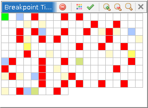
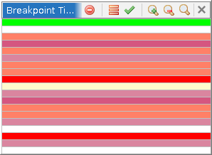
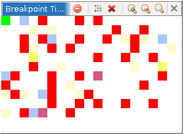

The Breakpoint Timeline window provides a visual overview of all snapshots in the current trace, highlighting snapshots where breakpoints were hit. Each cell in the grid represents one or more consecutive snapshots. Cells are ordered left to right, top to bottom starting from the lowest snapshot to the highest. Cells are colored according to the type of breakpoint hit recorded in those snapshots. Clicking a cell navigates to the earliest hit or snapshot in the cell. A click and drag across cells opens another Timeline window zoomed on the selected snapshot range.
Breakpoint hits are detected by examining the trace's recorded data. For execution breakpoints (hardware or software), the plugin searches for stack frames whose program counter falls within the breakpoint's address range. For memory read and write breakpoints, it searches for trace memory references to the breakpoint's address range with the corresponding reference type. The plugin listens for changes to breakpoints and snapshots and updates the display automatically. NOTE: R/W breakpoints are only supported for connectors and/or importers that record memory references to the trace. At this time, that includes only the TENET and TENET++ loaders.
The timeline panel fills the window with a grid of cells. Each cell covers a contiguous range of snapshots. The number of snapshots per cell is determined automatically so that all snapshots from 0 to the maximum snapshot (or from the start to the stop snapshot of a zoomed window) fit within the visible area.
Each cell is filled with a color indicating the breakpoint activity in its snapshot range:
In addition, three overlay colors indicate interactive state:
Hovering over a cell shows a tooltip with:
Clicking a cell activates the snapshot associated with the first breakpoint hit event in that cell. If the cell contains no breakpoint hit, the first snapshot in the cell's range is activated.
Clicking and dragging across a range of cells opens a new zoom window focused on the snapshot range covered by the drag selection. The zoom window is a separate Breakpoint Timeline provider showing only the selected sub-range. Zoom windows are trace specific and are hidden when a different trace is activated and restored when the original trace is reactivated.
Scrolling the mouse wheel over the timeline panel activates the next (wheel down) or previous (wheel up) snapshot.

Switches the layout between a 2D grid and a single vertical column. In column mode, each cell occupies the full width of the panel and cells are stacked vertically from top (earliest snapshot) to bottom (latest snapshot).

Shows or hides the border drawn around each cell. When the grid outline is enabled, cell boundaries are drawn in the disabled foreground color.
Increases the default cell size by one pixel in each dimension. The grid is recalculated after each step.
Decreases the default cell size by one pixel in each dimension, down to a minimum of one pixel.
Sets the default cell size to the minimum (one pixel).
Closes all zoom sub-windows that were created for the current trace. This action has no effect on the main Breakpoint Timeline window itself.
The Breakpoint Timeline plugin adds context menu actions to the following views: the Static Listing, the Dynamic Listing, the Registers window, and the Byte Viewer. These actions search the current trace for breakpoint hits at the address or address range selected in the active view and navigate to or list the matching snapshots.
The address range used for the search is determined from the current selection in the active view. If there is no selection, the single address at the cursor is used.
Actions are organized into two top-level menu groups:
These actions navigate to a single snapshot. They appear as submenus under Go to..., grouped by search direction:
Each submenu contains one entry per breakpoint type:
These actions open a table window listing every snapshot in the trace where the selected address was hit, for the chosen breakpoint type. The table has two columns: Snap (the snapshot number) and Address (the PC when the hit occurred). Double-clicking a row in the table navigates to that snapshot. The same four breakpoint type entries (Execution, Memory Read, Memory Write, Memory Access) are used for this action.